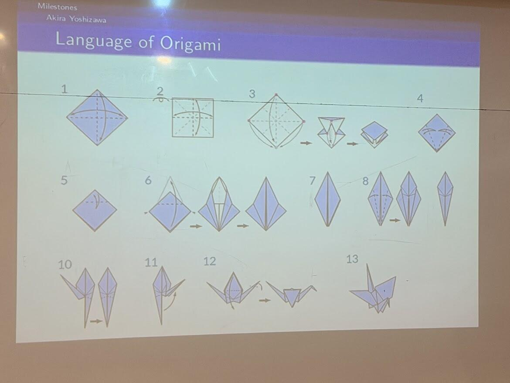

July 8th, 2026
Being an Undergraduate Teaching Assistant at Ashoka University
Last year, I attended the Lodha Genius Programme as a student, studying pure mathematics under some of the best professors in India. It's actually the reason I chose to study mathematics at university.
This year, I got to return, but on the other side of the classroom.
After finishing high school, the Lodha Genius Programme brought me back for their 2026 edition as a Teaching Assistant. It was an undergraduate teaching position at Lodha Genius, which made an exception to include me to be a part of the programme. I also worked as a Mathematics Undergraduate Research Apprentice over the duration of the four weeks (separate post above).
Over four weeks, I was housed completely at Ashoka University, and I worked across four completely different courses.
Week 1, with the Junior Track: "Fundamentals of Investing: Actualizing Financial Independence," under Professor Raghuveer Nath of SFI Wealth (University of Oxford, New York University). We covered investing fundamentals, PE ratios, and quantitative approaches to markets.
Week 2, with the Senior Science Track: "Rubik's Cube and Group Theory," under Professor Ramprasad Saptharishi of the Tata Institute of Fundamental Research. In a week, we took students from never having touched a cube to solving a 3x3, a 2x2, and even solving blindfolded using the Old Pochmann Method.
Week 3: "Basic but Essential Mechanics," under Professor Bhas Bhamre of the Ramanujan Academy. This one let me indulge my own long-standing love for physics while teaching it to others.
Week 4: "Origami and Advanced Geometry," under Professor Sagar Shrivastava of Iowa State University, working through complex origami models and the geometry behind every fold and crease.
Four weeks, four subjects, and four professors who taught me nearly as much as they taught the students.
Thank you to Eshita Ma'am and Satyam Sir at the Lodha Foundation for bringing me back, Anupama Ambika Ma'am for all the support, and to Professor Nath, Professor Saptharishi, Professor Bhamre, and Professor Shrivastava for letting me learn alongside you.

Teaching at the Lodha Genius Programme 2026.

Origami and Advanced Geometry, Week 4.